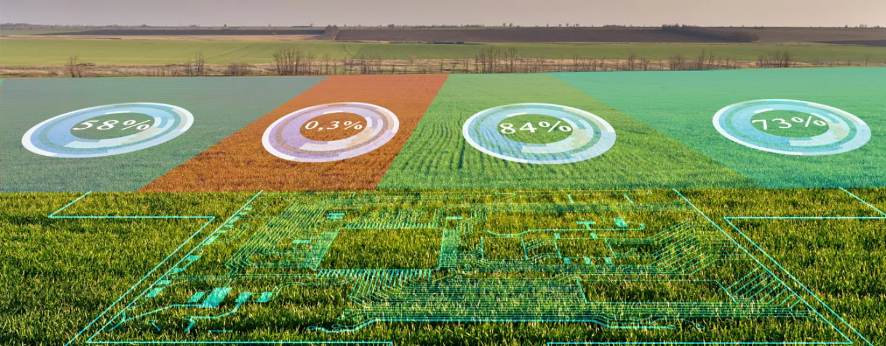
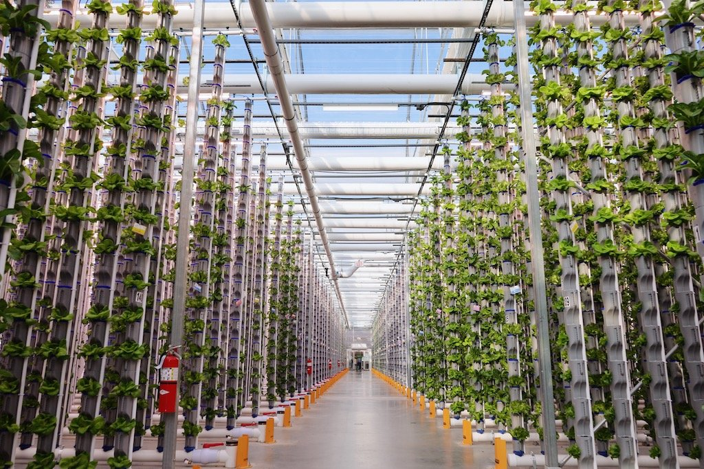
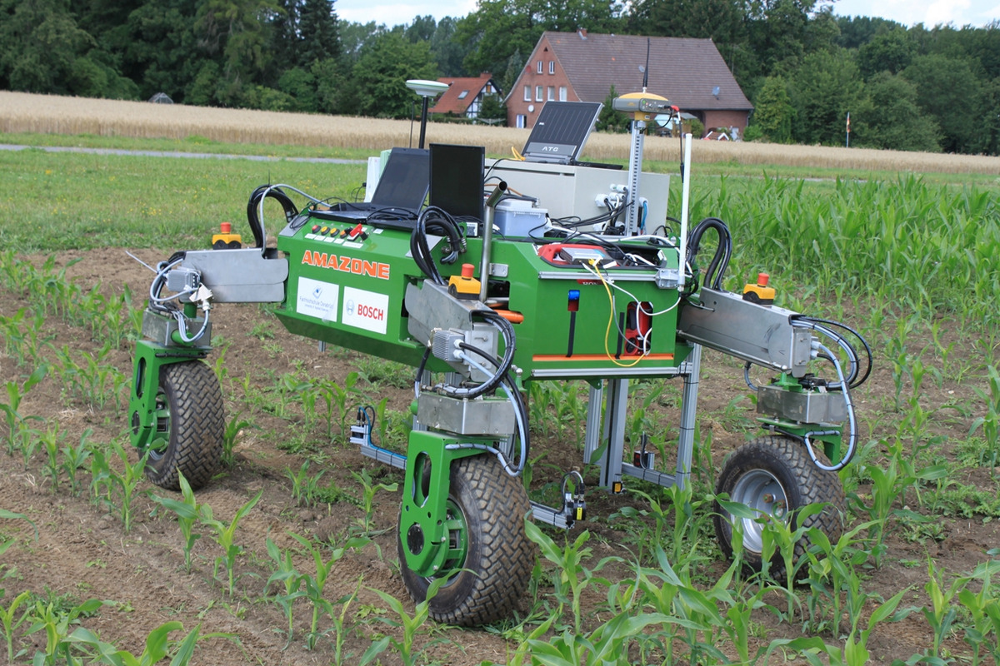
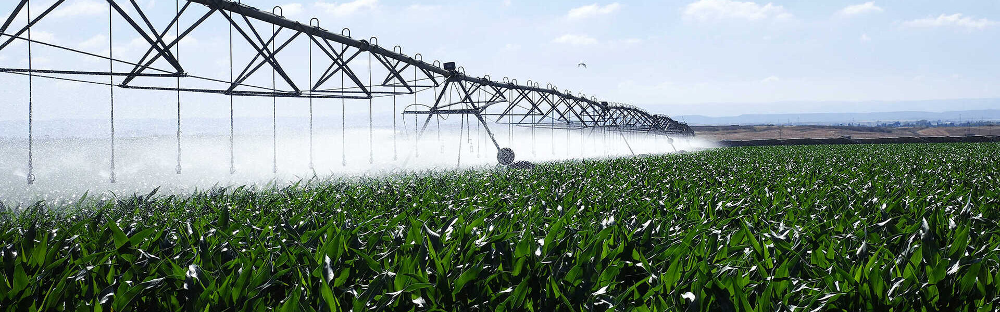
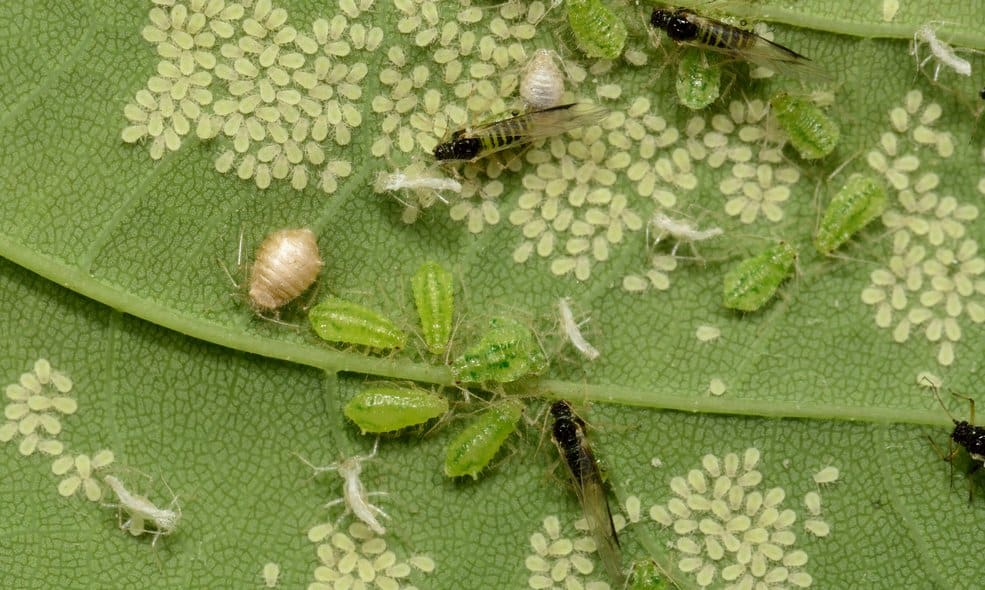
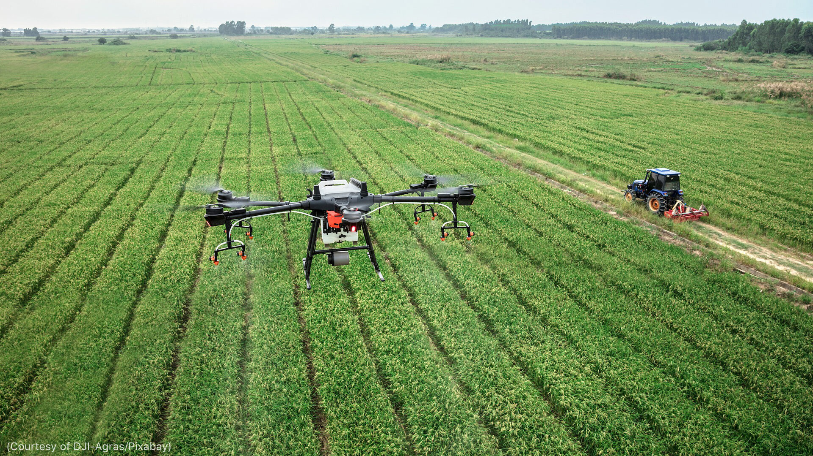
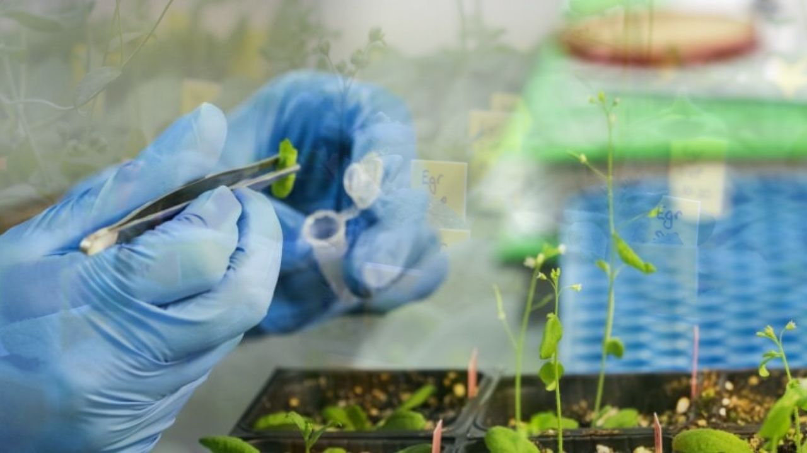

Precision Agriculture: Optimizing Farming Practices with Data-driven Insights
 Utilizing GPS, sensors, and drones to enhance crop management and resource allocation.Vertical Farming: Sustainable Urban Agriculture for the Future
 Growing crops in vertically stacked layers indoors using controlled environment and efficient resource usage.Robotics and Automation in Agriculture: Revolutionizing Farm Labor
 Implementing robots for planting, weeding, harvesting, and other tasks to improve efficiency and reduce manual labor.Smart Irrigation Systems: Efficient Water Management for Sustainable Agriculture
 Utilizing sensors and data analytics to optimize irrigation schedules and minimize water usage in fields.Biological Pest Control: Natural Solutions for Sustainable Pest Management
 Implementing beneficial insects and biopesticides to control pests while minimizing environmental impact.Drones for Aerial Monitoring and Spraying: Precision Insights and Application
 Utilizing drones for aerial surveillance and precision spraying, enhancing efficiency and reducing manual labor.Genetic Engineering in Agriculture: Engineering Crops for a Changing World
 Developing genetically modified organisms (GMOs) with traits like drought tolerance and disease resistance to improve crop resilience and yield.
Video description of the farming technologies